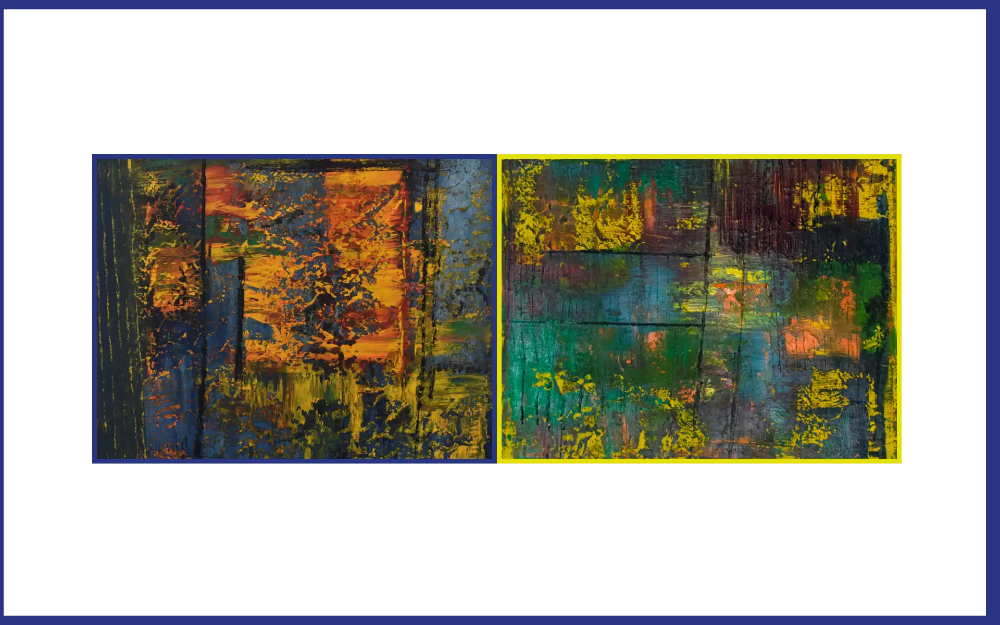
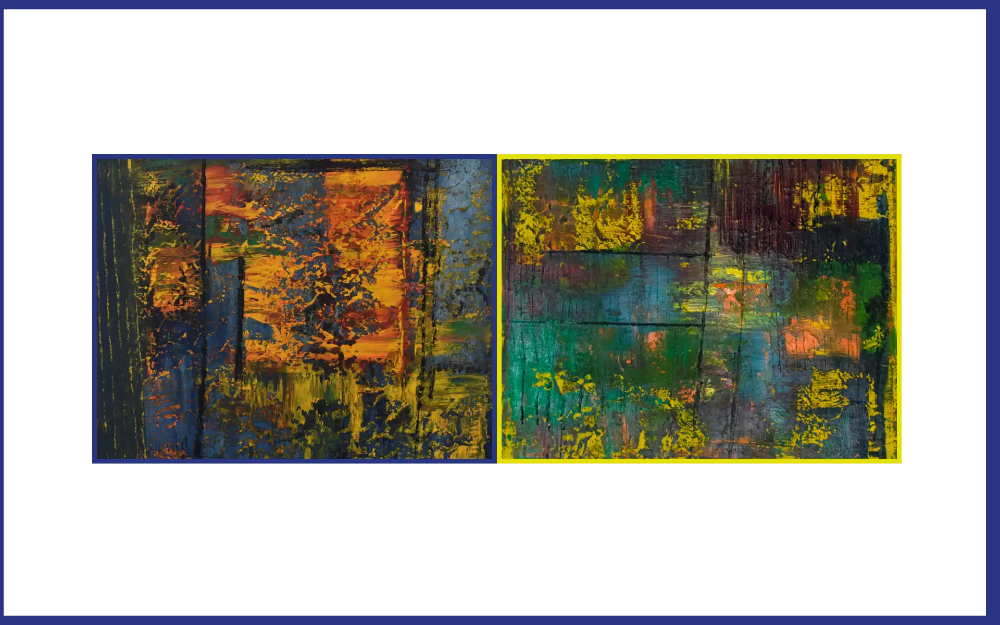

Née à Rabat en 1970, Fatine quitte le Maroc pour poursuivre des études littéraires à Paris IV–Sorbonne,
où elle se passionne pour l’art et l’histoire de l’art. Au fil des années, ses rencontres avec des artistes
et critiques nourrissent une vision personnelle de la création. C’est auprès de l’artiste Sylvie Berrault
qu’elle découvre, dans les années 2010, sa voie dans la peinture abstraite et la sculpture.
Fatine explore les liens entre matière, texture et émotion, cherchant dans chaque œuvre un équilibre entre intériorité et mouvement. Ses tableaux, nourris d’opéra
et d’intensité, invitent à un voyage intérieur où la couleur devient langage et la matière, mémoire.
Elle a exposé notamment à la Galerie Artémis en 2024.


 
